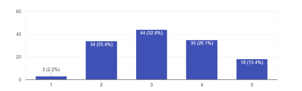
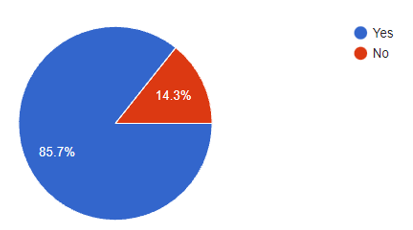
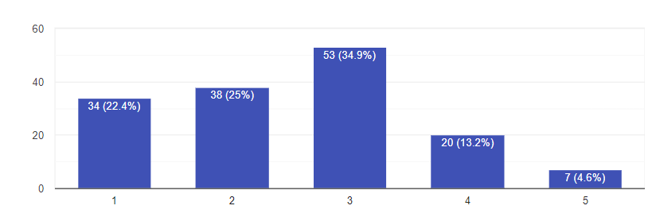
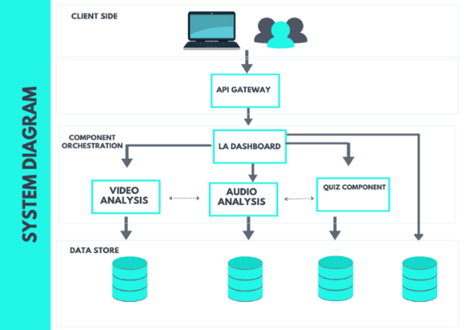
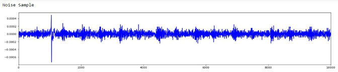
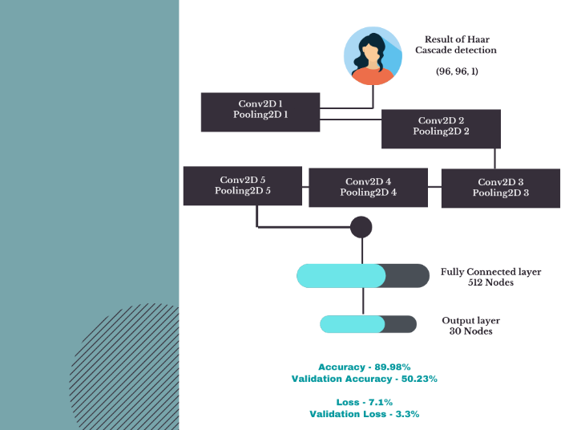
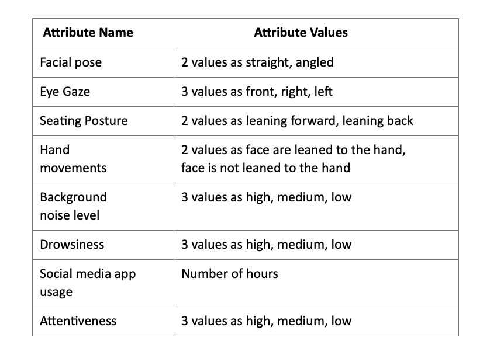
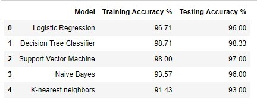
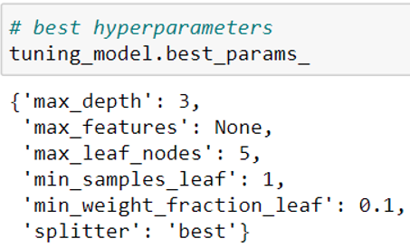

Current pandemic situation has manipulated people to adapt to a new normal forcefully and due to the same
reason education system is also evolving but the actual question is how productive the new methodologies
utilized are. E-learning is not a novel concept but is becoming a necessity and the proposed platform could
be identified as a direct response to the current emergency. This can also be known as an “ERT” situation; a
shift of instructional delivery to an alternate delivery method in response to a crisis situation. The main
intention in these situations is not to recreate a robust educational system but to provide access to
institutions in a manner that is easy to set up and is dependable during an emergency while outperforming
both E-learning & traditional classroom methods. To provide a solution to overcome barriers faced in a
pandemic situation in a virtual classroom, the implemented system is encapsulated with a dashboard
centralizing facts gathered from audio & video analyzing components which are analyzed against student
performance utilizing personalized assessing techniques to deliver learning analytics.
MILESTONES
Project milestones are defined as the achievement of specific
activities of the project
This section will provide information from the literature reviewed regarding the approach taken to
tackle using behavioural analysis, quiz, and learning analytics to construct the Remotify ERT
platform. A Learning Management System (LMS) is a software application for the administration,
documentation, tracking, reporting and delivery of electronic educational technology (also called
e-learning) courses or training programs [1]. LMS systems have been used in the pre-pandemic period,
in hand with real classrooms to deliver various materials to students. But the usability of LMS during
the COVID-19 pandemic proved to be inefficient and indicated unreadiness. The COVID-19 pandemic forced
the existing online teaching structure which had not built appropriate distance learning frameworks to
modify their operation and explore ways to continue the educational process. Thus, educational
structures that used physical spaces such as laboratories and lecture halls were forced to suspend
in-class teaching and use a distance learning model to continue the educational process[2]. This
situation is called Emergency Remote Teaching (ERT). ERT is still coined as distance learning, but
with several differences, not only because of the possible lack of training and experience of
educators called upon to practice ERT but also due to the impossibility of applying the design and
implementation principles of distance education that had existed up until the COVID-19 pandemic[2].
Along with this unreadiness of the systems in place, human factors were also unready and unfamiliar
(i.e., institution bodies, students, and educators) thereby making it difficult for a smooth transfer
to total distance learning. To tackle this problem, this research proposes a system that will address
the key problems identified through a platform created especially for ERT.
A negative view of distance learning results in a reduction of the total productivity of a learning
experience, in particular the decline of attentiveness of a student which reduces the morale and
concentration levels in the classroom. Measurements of attentiveness are either based on physiological
measures or observational measures. Both are neither reliable nor practical for lecture hall
settings[3]. To mitigate this problem, we propose detecting students’ emotions during a lecture to
give insights into students’ morale during the lecture for teachers to better understand whether the
material is being delivered as intended. This will benefit the students as their condition throughout
a lecture is considered and teachers can modify the progression of a lecture to keep up the
interaction and morale of the students throughout a lecture. Such an understanding of students is
naturally done in a real-life classroom, but it is difficult in an online classroom[4].
There has been some research done since the beginning of the COVID-19 pandemic, such as the Classroom
Attentiveness Classification Tool by Timothy P. Negron et al[5] where they inspect and monitor
attentiveness in a variety of instructional phases within the learning environment. It classifies
attentive and inattentive behaviour. It processes video into images and compares two corresponding
pixels to determine motion between two images. While the sound is processed to determine the intensity
level in decibels. And data is run by using SVM (Support Vector Machines) and PVSM classifier to
produce the attentiveness status. Another research that approaches creating a greater LMS system is 3I
LMS by K. J. L. Fernando et al[6] proposing a system that would include 3 key features, namely;
assignments and assessments helper, quiz and online quiz analyzer. These features would tackle
providing students with better assistance when doing assignments and keeping track of deadlines and
progress, meanwhile, a quiz which would access student knowledge about a certain topic and finally a
quiz analyzer which is in place to analyze student quiz data and answering patterns for the teacher to
refer to and use for a better system. This system mainly focuses on student outcomes following a
lesson, thereby extending the original narrative of traditional LMS systems. In another instance,
Classquake by Kai Michael Hover et al[3] explores the decline of student attentiveness during lectures
and proposes a system where students smartphones are used as decentralized sensors to measure activity
and attentiveness during lectures by using sensors. This is another approach taken to solve the
attentiveness problem. The system aims to support teachers to maintain a level of attentiveness and
recover attentiveness of students. They found that due to the complex psychological factors it makes
it difficult to completely deconstruct the student mindset during a lecture and cannot yet ensure how
reliable the system would be in different online environments. To approach the complex psychological
factor, behavioral analysis where video and audio are used to understand emotions of students during a
session. There has been substantial work on determining emotions, such as AffectAura by McDuff et
al[7] which has extensively explored human emotion. It classifies emotions into three factors:
valence, degree of emotion and engagement level. Mining algorithms are used data collected from
various hardware devices. A. Jaiswal et al [8] explores facial emotion detection using deep learning,
where two models using CNN (Convolutional Neural Network) architecture with 2 layers which are used to
extract the features in a frame where there was an average 70.14% accuracy for 6 different emotions
following a training process which involved 2 different datasets, JAFFE and FERC-2013. Due to the fact
that behavioural analysis deals with sensitive data, it is important to receive the highest accuracy
possible. When considering which method to use for emotion detection we look at this research by M.
Nadeeshani et al[9] explores facial emotion prediction and seeks to find out the best methods to
tackle understanding complex facial emotions. By basing it on a clinically recognized system names
Facial Action Coding System (FACS). Their research concluded that when considering behavioural
analysis Deep Learning models such as CNN achieve better results at the expense of high processing
power more than Machine Learning Models such as SVC or Decision Tree.
To complete our behaviour analysis, this research additionally investigates the audio environment of a
student into consideration. We look at research that sought to classify activities based on depth
sequences and audio[10] here they have created a model for Short Time Fourier Transform from audio
clips and classifying using a Neural Network model to detect daily living activities of elders by
classifying 20 activities based on audio analysis, they found that there was a difficulty in
identifying some complex audio and found there were instances of misclassification. This shows that
while audio classification is possible, there are substantial difficulties in classifying between
complex noise. Another research also shows that attentiveness can be impacted by the audio environment
of the student. In this research by C. S. Wasserman et al[11] they look into the student attentiveness
in different audio environments from a psychological perspective by studying 27 different
participants. They considered student attention under three varying noise conditions, namely, ambient
noise, pink noise, and the audio track of a television. Their findings suggest that not all noise is
created equal when it comes to paying attention. They found that while audio environment impact on a
student may depend, in general, the participants may feel a higher level of frustration which impacts
their attention span towards a task and would suffer from an impairment of attention in a case of a
complex sound such as the audio of television being in the background of the student’s environment.
However, it depends because occasionally students listen to music while paying attention to a task.
References
M. F. Tretinjak, "Moving teaching from blackboard to the learning management system — Helping
absent students learn from home," 2018 41st International Convention on Information and
Communication Technology, Electronics and Microelectronics (MIPRO), 2018, pp. 0500-0502, doi:
10.23919/MIPRO.2018.8400095.
S. Doukakis, P. Sfyris, M. Niari and E. Alexopoulos, "Exploring Educational Practices in Emergency
Remote Teaching. The Role of Educational Neuroscience," 2021 IEEE Global Engineering Education
Conference (EDUCON), 2021, pp. 1026-1034, doi: 10.1109/EDUCON46332.2021.9454143.
K. M. Höver and M. Mühlhäuser, "Classquake: Measuring Students' Attentiveness in the Classroom,"
2015 IEEE International Symposium on Multimedia (ISM), 2015, pp. 577-582, doi: 10.1109/ISM.2015.24.
K. K. V and V. Bahel, “Transfer Learning Approach for Analyzing Attentiveness of Students in an
Online Classroom Environment with Emotion Detection,” May 2021.
T. P. Negron and C. A. Graves, "Classroom Attentiveness Classification Tool (ClassACT): The system
introduction," 2017 IEEE International Conference on Pervasive Computing and Communications
Workshops (PerCom Workshops), 2017, pp. 26-29, doi: 10.1109/PERCOMW.2017.7917513.
K. J. L. Fernando, W. J. D. L. D. D. Jayalath, A. D. R. N. Ranasinghe, P. K. B. P. S. Bandara and
H. De Silva, "Innovative, Integrated and Interactive (3I) LMS for Learners and Trainers," 2020 2nd
International Conference on Advancements in Computing (ICAC), 2020, pp. 37-42, doi:
10.1109/ICAC51239.2020.9357149
D. McDuff, A. Karlson, A. Kapoor, A. Roseway and M. Czerwinski, "AffectAura: Emotional wellbeing
reflection system," 2012 6th International Conference on Pervasive Computing Technologies for
Healthcare (PervasiveHealth) and Workshops, 2012, pp. 199-200.
A. Jaiswal, A. Krishnama Raju and S. Deb, "Facial Emotion Detection Using Deep Learning," 2020
International Conference for Emerging Technology (INCET), 2020, pp. 1-5, doi:
10.1109/INCET49848.2020.9154121.
M. Nadeeshani, A. Jayaweera and P. Samarasinghe, "Facial Emotion Prediction through Action Units
and Deep Learning," 2020 2nd International Conference on Advancements in Computing (ICAC), 2020, pp.
293-298, doi: 10.1109/ICAC51239.2020.9357138.
C. Siriwardhana, D. Madhuranga, R. Madushan and K. Gunasekera, "Classification of Activities of
Daily Living Based on Depth Sequences and Audio," 2019 14th Conference on Industrial and Information
Systems (ICIIS), 2019, pp. 278-283, doi: 10.1109/ICIIS47346.2019.9063306.
C. S. Wasserman and N. Segool, “Working in and with Noise: The Impact of Audio Environment on
Attention,” vol. 17, no. 4, pp. 203–212, 2013.
Research Gap
In an ERT circumstance involved parties have to work in a highly stressful situation while having no
knowledge of the end of the crisis. Given that is the scenario there are many areas to be handled and
addressed as explained earlier. The world is evolving, and the causes of interruptions to education
are not bounded to pandemics. It could be conflict scenarios, natural disasters, wars. Based on the
background review was performed it indicates that there have been many E-learning solutions, few
studies on utilizing learning analytics to monitor and analyse student actions/ feedback, few projects
were identified on solutions for ERT projects and no studies combining student audio-video features,
sleep hours, drowsiness, performance to deliver a better idea about the big picture to the audience.
There have been studies conducted centred round concepts of ERT concepts. An instance was identified
that used Facebook for Emergency Remote Teaching. Facebook was selected by the research group due to
reasons like students’ familiarity with the platform, consistency of the platform, low consumption of
the internet and the importance of considering user-friendliness as it is being tried out for an
emergency. Four sections have been mainly focused in this research and namely are material management,
communication, progress tracking and assessment tracking. For every course, a group on Facebook was
created and instructors were appointed as admins while students were members. Instructors were
requested to post lecture videos, syllabus, course outcomes in the created group and students were
requested to raise any concerns in the same group. The research can be identified as an economical
solution that is easily accessed in an emergency but it does not guarantee that it helps keep student
attentiveness nor does it give a clear idea about the class to the instructor as replying to the chat
takes place as per student discretion and through replies, an effective analysis cannot be performed.
Also, it is not practical for an instructor to analyse all the replies and student reactions unless a
specific mechanism is provided.
Apart from the explained research, other research projects on Emergency Remote teaching were to
understand mainly the importance of it and not actual implementations. The facilities which are
currently implemented in LMS systems are all more cantered around supporting the student who goes to
face to face classrooms or supporting a student that is absent from the real classroom such where
course materials (textbooks, lecture notes, additional reading) is available on the LMS interface for
students to access, Video Recording of lectures are offered by some LMS systems as per the teachers'
discretion and one of the most convenient features available in most modern LMS systems is the ability
to submit assignments to lecturers, though there are systems which redirect students to email their
assignments to the lecturers. They mainly focus on providing the basic materials a student would need
and the ability to submit an assignment. LMS systems do not focus on student-teacher engagement or
interaction. Neither does it in any condition address student productivity and attentiveness during a
learning session. But these are not things that need to be considered when LMS is used for its
original purpose, which is being used hand in hand with real-life classrooms. But this is not possible
in an ERT situation. Due to its longevity, it has impacted the quality of education, due to its lack
of ability to convey the clear picture about the virtual classroom outperforming or at least to an
extent of a real face to face classroom which is why it is important to further develop on the concept
of ERT platforms.
Research has been conducted in blending learning analytics along with assessing students even though
it is not directly in the context of Emergency Remote Teaching. A method has been proposed mainly
based on Bloom's evaluation theory and the main motive of the research has been to track the learning
process to make the learning environment a better one.
This research attempts to extract learning analytics and through that to get a better understanding of
the student through task completion and feedback process. It would surely give an understanding about
the student and also increase interaction to some extent but the level of productivity obtained in a
real-world classroom cannot be met.
Another attempt at combining learning analytics to an E-Learning based Student Academic Performance
Evaluation System (SapeS) that analyses student behaviour in an LMS platform by assessing student
interactions with the system.
The concept of identifying the importance of analysing student behaviour using algorithms and
visualization has been given priority which adds significance to this system to a greater extent but
based on student interactions with an LMS system, to conclude the learners' situation cannot be
considered as sufficient and also this does not give an understanding regarding a particular course as
the most important part about learning analytics is that it helps the end-users provide solutions and
it is not possible using this solution. A similar attempt was tried out to analyse student actions
such as logins, number of visits to content material, number of practical exercises taken, assignments
completed, etc. Nevertheless, the same question is unanswered and using the LMS system an
understanding about the student cannot be guaranteed even if it is applied during an emergency and
customized to adapt to Emergency Remote Teaching.
Therefore, the research gap is reflected as there are no ERT solutions built from scratch and
E-learning solutions currently used does not give an understanding about the learner to ease the
learning process, instances that use Learning analytics do to analyse the learner and the leaner’s
environment to deliver promising results. Specifically, there were no research solutions using
learning analytics combining student facial expressions, audio data, drowsiness factor, sleep hours to
visualize a bigger picture to simplify and facilitate an effective learning environment in an
Emergency Remote Teaching situation while providing access to a dynamic quiz that gives a better
understanding about learners.
RESEARCH PROBLEM
The research will be centred around the Emergency Remote Learning environment and developing a system
that will respond better to a situation where it is needed in the present and the future, it is mainly
aimed to provide temporary access to instruction and instructional support. In the current times of
the COVID-19 pandemic, e-learning has become an essential part of life for students and educators
across the globe. But whilst it has become essential it can be said that since it is a situation
unlike any before the preparedness of the world towards this fully online world was inadequate and
opted to utilize software and tools that were not created for emergency teaching such as Zoom, Teams,
Google meet, etc. Since these software’s and tools weren’t created to be used especially for learning
purposes. There are certain areas where it could be considered lacking as elaborated later.
When it comes to learning we can consider various factors that would focus on a more productive and
efficient for all parties involved. When considering factors analyzed such as cognitive engagement,
affect motivation and perceived behavioural control. The students' impression of virtual classrooms
also has a large impact on distraction and reduced focus, problems with technology, insufficient
support and guidance from instructors as those were the most repetitive negative aspects especially in
an emergency.
Based on the background survey and as explained under the literature section, there are no ERT
solutions developed utilizing learning analytics that provides an answer to problems faced by students
as well students as learning tools do not facilitate a smooth learning environment for both parties.
Therefore, the problems remain unanswered. Also to obtain a better understanding of the importance of
implementing Remotify and whether it is a problem that requires attention, a survey was conducted
using a google form. 152 responses were collected and analyzed and the audience targeted to consist of
students and instructors. Participants were requested to rate their level of attentiveness on a scale
from 1 to 5 (1 being the lowest and 5 being the highest) during an online class and the results are
shown below:

The majority of the students’ attentiveness is below average is a prominently identifiable factor.
Also, the participants were requested to compare the level of effectiveness of virtual classes
conducted using currently available learning tools against the real physical classroom learning
experience:

85% of the participants agreed to the fact that there is a reduction of attention span during a
virtual session compared to a face to face classroom. Lastly, students and teachers were requested to
answer the question of whether the nonexistence of a mechanism to assess and analyze attentiveness
especially in an emergency where having physical classrooms is not possible is a problem and by
implementing the mentioned solution whether the problem can be addressed. More than 80% of the
participants agreed to the fact that it is a problem and the mentioned solution would be able to
mitigate it to an admirable extent.

Therefore, as identified through background literature and the user survey conducted, the absence of
an emergency remote teaching mechanism that would be able to perform a comprehensive analysis to
convey a better picture about students to instructors and also to make sure learning experience is
smooth and the gap between the real-world classroom and virtual classroom is diminished in an
emergency remote teaching scenario was identified as the main research problem to be answered and by
answering the main problem, issues incurred due to the additivity struggle, problems revolving around
the inability to maintain eye-to-eye communication and lack to interaction can also be answered.
Research Objectives
Create an ERT platform that can be used at any users’ convenience and
urgency while protecting the,
Integrity
Value of face-to-face teaching
Enhancing collaborative teaching by facilitating higher user productivity addressing
issues such as;
Lack of motivation
Lack of productivity
negative view of remote learning
Methodology
Remotify is an ERT solution encapsulated with learning analytics with the combination of audio and
video analyzing components along with an inbuilt personalized quiz function as mentioned earlier. The
solution is built as a web-based platform and consists of a mobile app that reflects the analytics
part of the application.

As shown, the system in its core is a streaming platform. Where audio and video streaming data are
analyzed to mitigate the problems recognized in e-learning today. It would be mandated for students to
keep both the microphone and the camera-enabled throughout the session to gather required data and but
will not be broadcasted and will be used for analysis purposes.
The audio clip collected through the students’ microphone is utilized to find the loudness of the
background as well as identify whether if there were any disturbances such as music playing in the
background. The loudness level is detected using the rcaudio python library. It facilitates real-time
recording and analysis of audio data. The mentioned library outputs the background noise volume, and
it is then classified as high, medium, and low. The basis followed when classifying is lower than 500
Hz classified as low, between 500 Hz and 2,000 range as a medium, above 2,000 as high. The margins
were verified by a soundproof professional and resulted in accurate results classifying correctly.
Then to identify the type of noise in the student’s environment STFT (Short-time Fourier transform)
features are used. The STFT features are used to train a fully connected neural network that consists
of 5 layers. The layers have 256, 256, 128, 128 and 8 neurons accordingly. All layers have ReLU
(rectified linear unit) activation function, and the 4th layer has a dropout layer to reduce
overfitting. The model was created using Keras Dense Layers and was trained, tested utilizing labelled
datasets. As explained under the literature review section, NN models have been used in past research
to successfully classify audio data. Therefore, the same approach was applied by using an NN model and
performing necessary modifications to enhance the model. First, the collected audio data would be
preprocessed and the actual disturbance or the background noise would be separated. Librosa is used to
trim the sound wave and the trimmed audio data is passed through the trained Neural Network model.
The separated noise would be then utilized to identify both loudness level and type of noise in the
background to deliver a better idea about the students learning environment.

The collected video data would be utilized for feature extraction and to perform the video analysis
required. The video data would be recorded and sent to the model at time intervals to OpenCV where
96*96 face images are detected, these images are then fed to a CNN model. The model is aimed at
detecting the activity of the student through their features. The convolutional network architecture
consists of 5 major layers, 1 fully connected layer, and a target output layer. Each layer has a
convolutional layer and pooling layer of size 2*2 with ReLU Activation. CNN was chosen as the most
suitable method for this purpose due to its high reliability and ample research done in the past as
explained under the literature review section.

The CNN model has been trained using a dataset provided by Dr Yoshua Bengio of the University of
Montreal[12]. The dataset includes 7049 images. Each row contains the (x, y) coordinates for 15 key
points and image data as a row-ordered list of pixels. For our testing, we used 2140 images which
included values for all 15 key points to train the model. The final output of the CNN model identifies
student movement during a lecture and the movement of students. This reduces the size of the video
input and discards unnecessary frames in the video. Following the video processing through the model,
it will continue to pinpoint the locations of the student. The output expected is the body pose and
detection of hand in the region of interest, this is detected using a library called MediaPipe, the
head pose is found using the perspective n point algorithm which is an OpenCV algorithm that estimated
the pose of a camera given a set of 3D points and results in their corresponding 2D projections.
Meanwhile, to get the finer details of eye gaze we use OpenCV to identify the sclera (white part) of
the eye and then converting it to grayscale, then a threshold is found, and the white pixels are
counted. We calculated the gaze dividing the white pixels of the left side with the right side to call
it the Gaze Ratio. All these values are compiled stored in the database as a CSV file.
The system includes another CNN model, this is included to detect drowsiness of a student separately
and it will directly result in the drowsiness factor in addition to the previous model that was
outputting extracted key features. Drowsiness detection would be identified using this deep learning
model to perform the classification. Keras library was used, and first pictures are taken of the eyes
using OpenCV, then Region of Interest (ROI) is created, then based on ROI eyes are detected. Next, the
classification takes place using CNN, and it will be identified by the classifier whether eyes are
open or close. Training and testing datasets were prepared to utilize images of opened and closed eyes
separately and labelled accordingly. A training dataset of 700 images and another testing dataset of
300 images were included to train and test the model. The CNN model consists of 4 layers and are 2
convolutional layers with 32 nodes each, another convolutional layer with 64 nodes and a fully
connected layer with 128 nodes. A ReLU activation function is used in all the layers except the output
layer that uses SoftMax instead. Then the sequential model was trained by tuning the epoch value to
arrive at the best accuracy. Drowsiness would be given a score by dividing the number of frames
flagged as eyes closed for more than 3 seconds by the total number of time frames considered. The
calculated score would be passed to the database. The time spent on social media would be captured
using the flutter plugin “app usage” and it would be considered as a measure of assessing
attentiveness as it will be taking into consideration a given student’s social media app usage
gathered from the user’s mobile phone. All these features passed by video, audio analysis functions
and independently detected factors such as drowsiness and social media app usage would be utilized to
determine the attentiveness. The dataset consists of the attributes mentioned below:

Models were trained utilizing various algorithms such as logistic regression, KNN, SVM, Naïve Bayes,
Decision tree and the highest accuracy was achieved by using the Decision tree model.

The decision tree was implemented from the node using the Classification And Regression Trees (CART)
algorithm by calculating Gini impurity and taking into consideration information gain ensuring that
the dataset is classified unmixed. The amount of uncertainty at a single node was calculated using the
Gini index and to quantify a question’s contribution towards unmixing was calculated using information
gain. Therefore, the best question to ask and the question order was arranged using the mentioned
concepts. Hyperparameter tuning was performed using the sklearn library to avoid overfitting and to
obtain the optimum model. The GridsearchCV which is a library of sklearn was utilized to suggest the
best parameters for max depth, maximum features to be considered, maximum leaf nodes, the minimum
number of samples required to be at a leaf node, the minimum weighted fraction of the total of weights
(of all the input samples) required to be at a leaf node and the strategy used to choose the split at
each node. Based on the dataset passed, below reflected figures were suggested as best parameter
values:

The model was initially trained with a dataset was prepared with the help of 3 professionals in
psychology that verified the validity of the dataset. The verified dataset consisted of 300 records
that were broadened using bootstrapping to 500 records. The dataset was then segregated as training
and testing by segregating 80% to training and the remaining 20% to testing. As mentioned, the audio,
video and independent data passed to the model was preprocessed and attentiveness was determined
whether it is high, medium, or low for a student’s given period.
Another functionality in the Remotify system is that allows supervisors to obtain an idea of students'
attentiveness against student performance. The teachers are facilitated to upload questions for each
class marking the level of difficulty. First, the quiz would start with easy questions followed by
other questions puzzled. Only if the students succeed in answering easy questions, the difficulty
level would be increased or decreased otherwise. Analyzed student attentiveness and quiz performance
gathered from the explained functions would lastly be visualized in a form of a dashboard embedded
with learning analytics that would help the teachers and instructors to get a better understanding of
the overall classroom as well as each student personally. In addition to that, if there are any
prominent noises in the background, it will be separately notified to the lecturer as the audio
analysis function classifies and identifies the type of background noise. Student attendance,
attentiveness and attentiveness against performance would be visualized ensuring that insights are
delivered to the audience delivering a better picture about the students' miles apart mitigating the
gap in a virtual classroom playing the role making emergency remote learning effective.